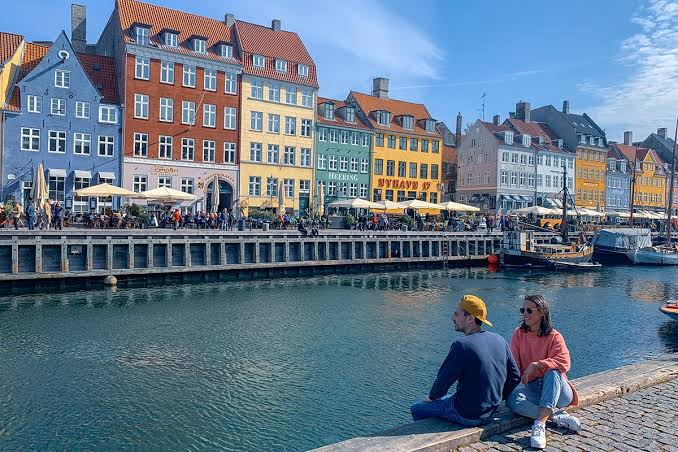

CityLoop Quest Copenhague


De mai à septembre, les journées sont longues et la ville vit dehors. Juin offre près de dix-huit heures de lumière, des parcs très verts et les feux de Sankt Hans. Juillet concentre festivals, croisiéristes et terrasses pleines ; les prix et l’affluence augmentent. Août reste agréable mais peut être humide, avec une lumière déjà plus douce en soirée.
Le printemps arrive par étapes. Mars peut être froid et venteux, tandis qu’avril alterne soleil net et averses. Les jardins de Tivoli, les cerisiers et les parcs donnent alors une énergie particulière à la ville. Les files sont généralement plus courtes qu’en été, mais certaines excursions saisonnières n’ont pas encore repris leur rythme complet.
L’automne colore Dyrehaven et Assistens Kirkegård. Septembre conserve souvent des températures douces ; octobre apporte vent, pluie et événements culturels comme la Nuit de la Culture. Novembre est sombre et calme, mais les premières décorations de Noël compensent les journées courtes. Les musées deviennent alors des refuges naturels.
Décembre transforme Tivoli, Nyhavn et les rues commerçantes, sans garantir la neige. Janvier et février sont les mois les plus paisibles et parfois les moins chers. La lumière basse donne aux façades une beauté graphique, mais le vent de l’Øresund peut rendre la température ressentie nettement plus froide. Superposer vêtements imperméables et couches chaudes est plus efficace qu’un seul manteau lourd.
Pour photographier Nyhavn ou la Petite Sirène sans foule, venez tôt le matin. Les musées sont souvent plus calmes à l’ouverture ou lors des nocturnes. Vérifiez toujours les jours fériés, les vacances scolaires danoises et les calendriers de Tivoli : les attractions ne fonctionnent pas toute l’année entre les saisons spéciales.